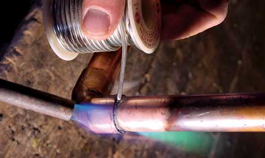

How To Solder Copper Pipes Successfully
Master the soldering process and find out which tools you’ll need for the job.
By Steve Maxwell
December 1, 2006
Soldering (also called “sweating”) is a process that uses molten metal to join copper water supply pipes with a bond that’s strong, permanent and waterproof. Plumber’s solder originally was made of lead, but because lead is now known to be toxic, solder is now mostly made from tin. But regardless of the metal it’s made from, the soldering process involves the same three steps: Clean and heat the metal, add solder and then let the joint connection cool and harden.
All good solder joints begin with brightly polished, dry copper pipes, because molten solder flows best into the pores of clean copper. Both the inner and outer sides of every joint - as well as the solder itself - must shine before assembly. Use 120-grit sandpaper or an emery cloth to polish all outside surfaces of plumbing joints, and use a wire brush made specifically for this job to clean inside surfaces. Before you assemble the joints prior to soldering, coat both halves of each joint with flux, a Vaselinelike substance that helps the solder flow and bond to the copper piping.
Now assemble the joint, put on your safety glasses and light a hand-held propane torch. Heat the joint area with the tip of the flame until the copper itself is hot enough to melt the solder when it touches the pipe. It’s vital that the heat of the pipe, not the flame, melts the solder. You know that you’ve completed a well-soldered joint when you can see a silver line of solder flowing on its own all the way around the pipe joint. A solder connection doesn’t require much melted metal, so use a light hand when applying it. If your solder melts and sticks to the pipe in blobs, then the pipe isn’t hot enough. If you want clean-looking joints, wipe the joint with a damp rag to remove excess solder when it’s still molten.
Tools for Soldering
- Pipe cutter and pipe minicutter. For about $30, these tools make cutting copper pipe easy, clean and fast. Use the minicutter in places too tight for the full-size tool.
- Propane torch. A multipurpose tool that’s economical to operate; ideal for soldering copper water supply pipes.
- Emery cloth and cleaning brushes. The perfect pair for cleaning the inside and outside surfaces of copper pipe joints.
- Flux and flux brush. Chemically cleans copper for best results. Brush makes flux application neat and easy.
|
 STEVE MAXWELL Regardless of the metal the solder is made from, the soldering process always involves the same three steps: Clean and heat the metal, add solder and then let the joint connection cool and harden. |
 STEVE MAXWELL Tools for soldering. |
|